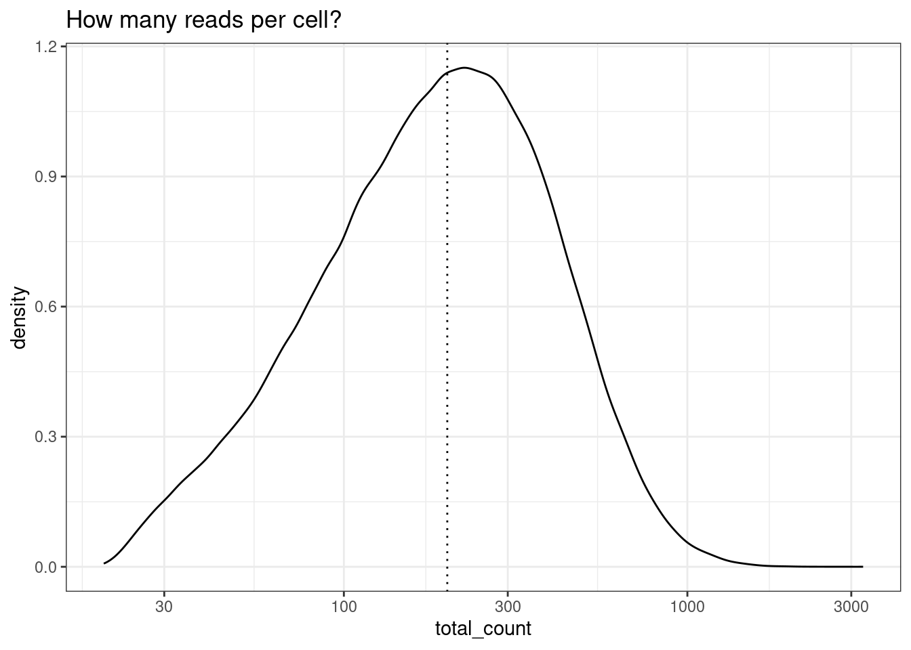
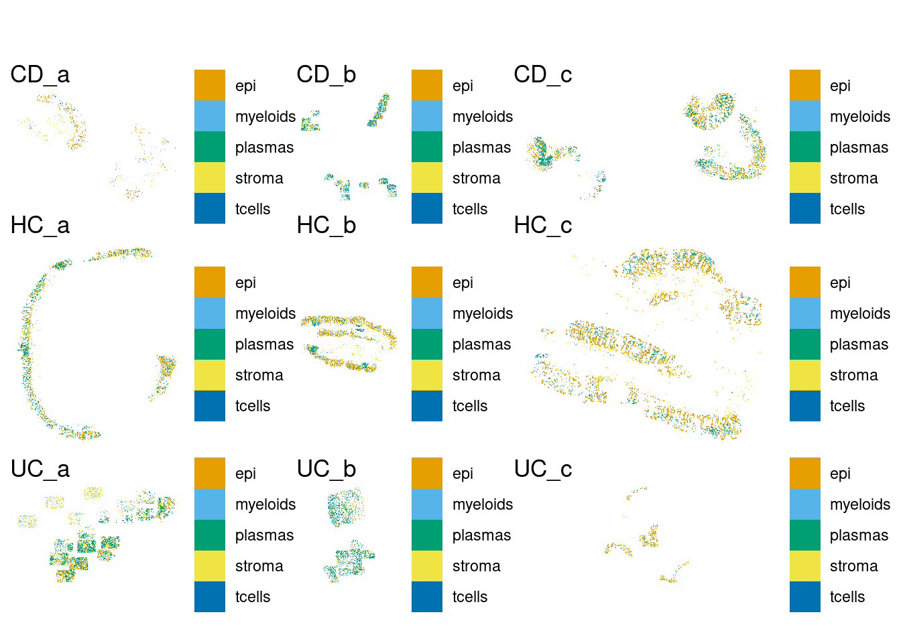
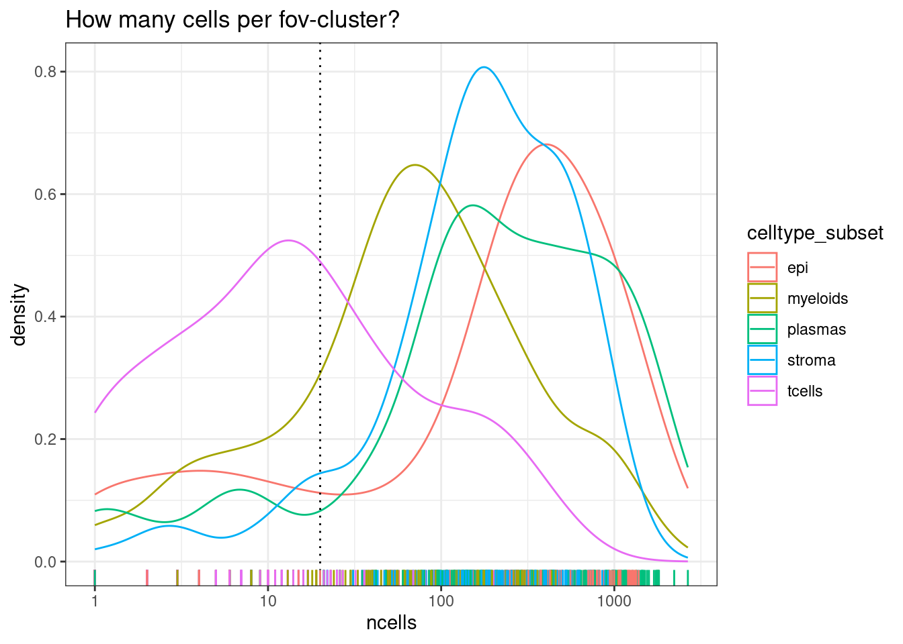
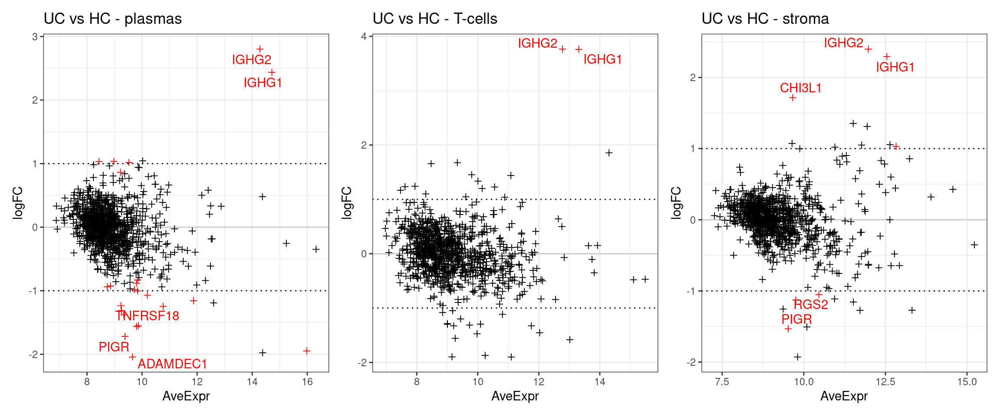
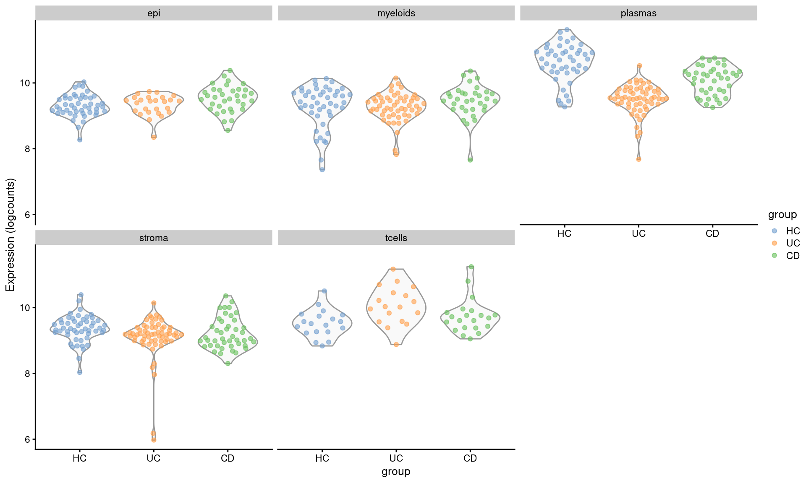
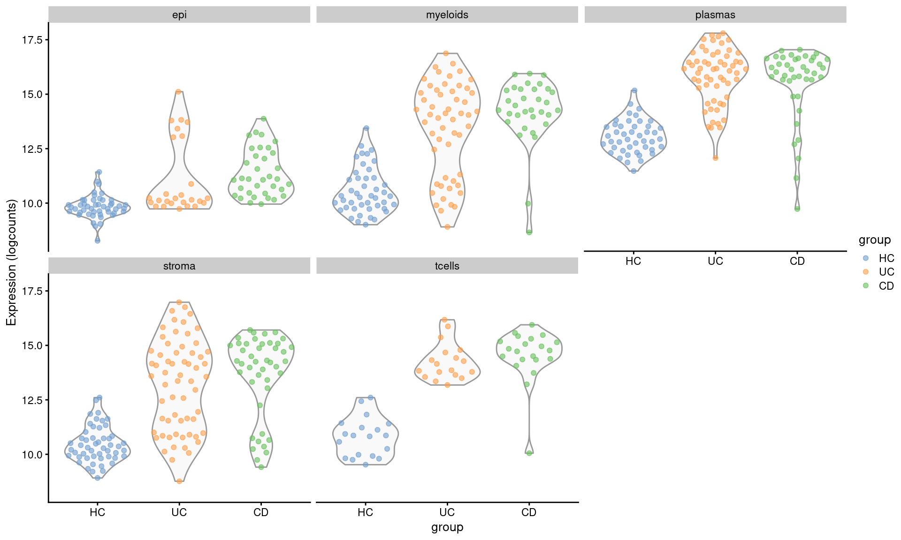

Differential expression between groups using pseudobulk
Sarah Williams
https://www.ncbi.nlm.nih.gov/pmc/articles/PMC6096346/
Overview
Once we have identified cell types present in the samples, its common to test how gene expression changes between experimental conditions, within each different cell type.
Some cell types may be dramatically affected by the experimental conditions, while others are not. Likewise some genes may change only in a specific cell type, whereas others show a more general difference.
This document describes how to apply a pseudobulk approach to test for differences between groups. In a pseudobulk approach counts are obtained by pooling together groups of cells; in this case cells from the of the same celltype from the same fov. These pooled counts can then be analysed more like a bulk RNAseq experiment.
This is very similar to how a non-spatial single cell experiment may be analysed.
However, unlike a non-spatial single cell experiment, this experimental design has multiple FOVs from the same tissue sample; these pseudoreplicates are informative but cannot be considered true biological replicates. They can be incorporated into the statistics with the correlate duplicates approach (Smyth, Michaud, and Scott 2005).
Note that there are many other approaches to calculate differential expression in this kind of data - including those that make use of individual cells; see review (Soneson and Robinson 2018).

This test requires:
- Biological replicates for each group
- Assigned cell types
- [Optionally] Multiple fovs measured per sample
For example:
- What genes are differentially expressed in epithelial cells in Crohn’s disease vs healthy individuals?
- How do genes change with treatment in each different cell type in my sample?
Steps:
- Calculate pseudobulk
- Filter to testable pseudobulk groups (enough cells to pool)
- Filter to testable genes (enough expression to see changes)
- Test for changes in gene expression
- Plot DE results and individual genes.
Worked example
How does gene expression change within each cell type between Ulcerative colitis or Crohn’s disease, and Healthy controls?
Using data from Macrophage and neutrophil heterogeneity at single-cell spatial resolution in human inflammatory bowel disease from (Garrido-Trigo et al. 2023);
The study included 9 cosmx slides of colonic biopsies
- 3x HC - Healthy controls
- 3x UC - Ulcerative colitis
- 3x CD - Chrones’s disease
Load libraries and data
library(alabaster.sfe)
library(SpatialExperiment)
library(scuttle)
library(scater)
library(tidyverse)
library(limma)
library(DT)
library(edgeR)
library(BiocParallel)
library(Voyager)
library(patchwork)
library(ggrepel) # gg_repel, For non-overlapping gene labelsdata_dir <- file.path("~/projects/spatialsnippets/datasets/GSE234713_IBDcosmx_GarridoTrigo2023/processed_data")
sfe_01_loaded <- file.path(data_dir, "GSE234713_CosMx_IBD_sfe_01_loaded")
#se_pseudobulk_file <- file.path(data_dir, "GSE234713_CosMx_IBD_pseudobulk_se.RDS")
se_pseudobulk_file <- file.path(data_dir, "GSE234713_CosMx_IBD_pseudobulk_fov_se.RDS")sfe <- readObject(sfe_01_loaded)SUBSET FOR TESTING
#sfe <- sfe[,colData(sfe)$group %in% c('HC','UC')]
#sfe <- sfe[,sample(1:ncol(sfe), 10000)]Experimental design
There are three individuals per condition, one tissue sample from each individual. 9 slides in total. Each tissue sample has multiple FOVs captured; these are our pseudoreplicates. Each ‘sample’ is listed below.
In the cosMX output an ‘fov’ refers to the rectangular regions on the slide that are measured; there are multiple fovs per sample, and in this experiment, only one sample per slide. This document uses the latter.
sample_table <- select(as_tibble(colData(sfe)), condition, individual_code, fov_name) %>%
unique() %>%
group_by(condition, individual_code) %>%
summarise(n_fovs= n(), item = str_c(fov_name, collapse = ", "))
DT::datatable(sample_table)Filter cells for de
Filter counts per cell
To start, check out the distribution of reads per cell. Here, we choose and apply a filter of 200 reads. This is low compared to what you might see in a single scRNAseq experiment, but we are working with only 1000 genes.
Even if you have alreay applied a counts per cell filter across your dataset (e.g at least 50 counts per cell), you might choose to apply a second, higher threshold for differnetial expression. We can afford to be more stringent for the differential expression threshold because the spatial information isn’t being used, so there is no problem of ‘gaps’ between cells. Exact thresholds will depend on your data. More counts in a cell tend to result in better cell type identification and smoother expression values and should theoretically yeild better differential expression results - if there are enough cells.
min_reads_per_cell <- 200
ggplot(colData(sfe), aes(x=total_count)) +
geom_density() +
geom_vline(xintercept = min_reads_per_cell, lty=3) +
scale_x_log10() +
theme_bw()+
ggtitle("How many reads per cell?")
sfe <- sfe[,sfe$total_count>= min_reads_per_cell]Deciding on pseudobulk grouping
plot_one <- function(sample) {
p <- plotSpatialFeature(sfe[,sfe$tissue_sample == sample], "celltype_subset",colGeometryName = "cellSeg") +
theme(legend.title=element_blank()) +
ggtitle(sample)
return(p)
}
samples <- levels(sfe$tissue_sample)
plots <- lapply(FUN=plot_one, X=samples)
p.all <- wrap_plots(plots, ncol=3)
plot(p.all)
Calculate pseudobulk
Explain why pseudobulk<<<<<
We need to define the grouping that will make one pseudobulk sample for analysis. In this experiment, we can consider all FOVs within a tissue sample as somewhat equivalent. Therefore that is all cells of a particular celltype within an FOV region.
If we only had one fov per sample, celltype + sample would be directly equivalent.
If we have tiled fovs across an entire tissue sample celltype + sample woudl work
If we had a tiled fovs across a tissue sample with distinct regions it would be necessary to group them by subregion fov + celltype. Alternatively pool the entire sample if each one is equivalent - it depends on where transcriptional differences are expected.
<<<<<
Now use the PseudobulkExpression() function to sum up each gene’s gene expression across each fov_cluster.
This will build a SummarisedExperiment object at the ‘fov_cluster’ level’. Which contains one entry per group, containing the sum of copies of the gene in all cells within the grouping.
This can take a while to run - this code uses 8 cores to speed it up. Even so, its well worth saving the ‘pseudobulk’ object to disk for later calculations and visualisations.
#sfe$pdb_sample <- paste0(sfe$tissue_sample, '_', sfe$celltype_subset)
sfe$pdb_sample <- paste0(sfe$tissue_sample, '_', sfe$fov, '_', sfe$celltype_subset)
se.pdb <- aggregateAcrossCells(sfe, ids=sfe$pdb_sample,
BPPARAM = MulticoreParam(workers=8) # Use 8 cores, requires BiocParallel
)
# To save it
saveRDS(se.pdb, se_pseudobulk_file)Read in the previously prepared object.
se.pdb <- readRDS( se_pseudobulk_file)Now instead of counts for each individual cell, we have our pseodubulk matrix with the pooled sum of counts for each celltype within each fov region. So the numbers are much higher, with fewer zeros.
counts(se.pdb)[1:10,1:4] CD_a_10_epi CD_a_10_myeloids CD_a_10_plasmas CD_a_10_stroma
AATK 5 0 1 1
ABL1 3 0 0 0
ABL2 12 0 0 0
ACE 6 0 0 1
ACE2 7 0 2 0
ACKR1 2 0 0 0
ACKR3 9 0 0 0
ACKR4 5 0 1 1
ACTA2 1 0 0 0
ACTG2 3 0 0 0Cell filtering and counting (NEW)
Once the pseudobulk replicate grouping is decided, we need to check there will be enough cells to perform our analyses. Note there are several levels of filtering here!
- Need at least x reads in a cell to include it (Done before pseudobulk step)
- Need at least x cells of a celltype within an fov to include a sample
- Can only test where we have at least 2 samples on each side of a contrast.
What these thresholds should be needs to be determined for each experiment.
Filter cells per group
Each of our ‘pseudobulk’ samples represents a pool of cells. But some pools will contain very few cells, and should be excluded.
The aggregateAcrossCells function we used to group the groups keeps values in the sample annotation where every cell has the same value (or NA if they don’t) - this means we have all the sample and condition information. Plus, it adds a new column called ‘ncells’, which is the number of cells in the pool.
DT::datatable(data.frame(colData(se.pdb))[,c('pdb_sample','individual_code','tissue_sample','ncells')])# What is the minimum accepptable number of cells in a pool?
min_cells_per_fovcluster <- 20
ggplot(colData(se.pdb), aes(x=ncells, col=celltype_subset)) +
geom_density() +
geom_vline(xintercept=min_cells_per_fovcluster, lty=3) +
geom_rug() +
scale_x_log10() +
theme_bw() +
ggtitle("How many cells per fov-cluster?")
Note there are much fewer t-cells overall, but given that we have a high number of samples, there should still be enough to include. Its typical that some of the less common cell types are difficult or impossible to reliably test.
We can then remove pools where there were too few cells - choosing a threshold of 20 in this instance.
ncol(se.pdb)[1] 787se.pdb <- se.pdb[,se.pdb$ncells >= min_cells_per_fovcluster]
ncol(se.pdb)[1] 600Samples per contrast.
Ignoring pseodureplicate fovs from a single sample, how many bioloical samples are represented in our filtered table?
In this experiment, there are enough samples to run the contrasts for every cell type.
celltype_summary_table.passed <- data.frame(colData(se.pdb)[,c('pdb_sample','condition','individual_code','celltype_subset')])
celltype_summary_table.passed %>% select(condition, individual_code, celltype_subset) %>%
unique() %>%
group_by(condition, celltype_subset) %>%
summarise(n=n()) %>%
pivot_wider( names_from=condition, values_from = n)# A tibble: 5 × 4
celltype_subset `Healthy controls` `Ulcerative colitis` `Crohn's disease`
<fct> <int> <int> <int>
1 epi 3 3 3
2 myeloids 3 3 3
3 plasmas 3 3 3
4 stroma 3 3 3
5 tcells 2 2 3Calculate Differential Expression
We now have a counts matrix, and an annotation table that describes its samples.
This looks very much like a bulk RNAseq experiment. Except - instead of X samples across Y conditions, we have X samples of Y conditions for each of Z celltypes.
# For clarity, pull out the counts amtrix and annotation table
pseudobulk_counts_matrix <- counts(se.pdb)
pseudobulk_anno_table <- as_tibble(colData(se.pdb)[,c('pdb_sample','group','condition','individual_code','tissue_sample','celltype_subset')])
pseudobulk_counts_matrix[1:10,1:4] CD_a_10_epi CD_a_11_epi CD_a_12_epi CD_a_13_epi
AATK 5 10 10 12
ABL1 3 13 12 5
ABL2 12 10 3 12
ACE 6 13 5 9
ACE2 7 9 12 21
ACKR1 2 8 10 13
ACKR3 9 4 7 9
ACKR4 5 10 9 26
ACTA2 1 5 14 7
ACTG2 3 6 2 9head(pseudobulk_anno_table)# A tibble: 6 × 6
pdb_sample group condition individual_code tissue_sample celltype_subset
<chr> <fct> <fct> <fct> <fct> <fct>
1 CD_a_10_epi CD Crohn's d… CD_a CD_a epi
2 CD_a_11_epi CD Crohn's d… CD_a CD_a epi
3 CD_a_12_epi CD Crohn's d… CD_a CD_a epi
4 CD_a_13_epi CD Crohn's d… CD_a CD_a epi
5 CD_a_14_epi CD Crohn's d… CD_a CD_a epi
6 CD_a_14_plasmas CD Crohn's d… CD_a CD_a plasmas We will use a fairly standard limma differential expression analysis.
We will process each celltype one at a time as follows:
- Subset the counts matrix and annotation table to the celltype.
- Build and fit the model. In our case, a simple one that looks for various by disease group, blocked on individual.
- Check there are enough biological samples to run the test
- Run the test.
How to build the model and run the test will need to be customised for your experimental design. Online resources that describe approaches for bulk RNAseq analyses can be applied to pseudobulk analyses - see the ‘More Information’ section of this document for suggestions.
The model
In this case the line model.matrix( ~0 + group) builds a
model where gene expression is expected to vary by group (UC/CD/HC). The
~0 part indicates a ‘intercept’, which is convenient because it means we
can include all 3 groups in our contrasts, rather than one of them being
treated as the baseline. ( NB: Mathematically, you could use ~group
alone without intercept, and define contrasts accordingly to get the
same result. )
But, we also need to take into account our individuals. We do this by blocking on individual, and calculating a intra duplicate correlation with duplicateCorrelation()(Smyth, Michaud, and Scott 2005). That’s a method from microarray times, see discussion for how it is applied to bulk RNAseq data.
If instead we didn’t have multiple fovs per replicate, can skip blocking or use of duplicateCorrelation(). That is more typical of a typical of a bulk rnaseq or single cell RNAseq pseuobulk analysis.
Some example models: * ~0 + group, (no blocking or duplicate correlation) : If there was only one pseudoreplicate per individual. Either from a single fov, or from pooling fovs tile across a sample. * ~0 + group, (blocked on individual with using duplicate Correlation) : Used here, takes into account pseodureplicate fovs from the same samples. * ~0 + group + individual (no blocking or duplicate correlation) : If this was a treatment / time point experiment with paired samples from individuals. But only one pseodureplicate per individual. If there were multiple fovs per tissue sample, you could add blocking and duplicate correlation on tissue ID. * ~0 + group + celltype (with or without blocking + duplicate correlation) : Instead of subsetting to celltype, includes cell type in the model. This pulls more data into the statistics, but makes building the contrasts challenging! Not covered here.
About Filtering
What if you do need to skip constrasts? Often its easiest to count your biological replicates at the differential expression step and skip them there. You might need to run contrasts between groups one at a time to do this.
Actually calculate differential expression
Next continuue on to
# Build a table of each contrast we might want to do.
#contrasts = group A - group B.
#UCvHC = UC - HC
#CDvHC = CD - HC
contrasts_wanted <- bind_cols(
A= c("UC", "CD"), # First terms
B= c("HC", "HC") # Second terms (usually control)
)
# Empty list to collect results
de_result_list <- list()
## Cycle through each celltype
for (the_celltype in levels(se.pdb$celltype_subset)) {
print(the_celltype)
# Subset pseudobulk object to one celltype
se.pdb.this <- se.pdb[,se.pdb$celltype_subset == the_celltype]
# And pull out the annotation and counts
anno_table.this <- as.tibble(colData(se.pdb.this))
count_matrix.this <- counts(se.pdb.this)
## Check for sufficient replicates ##
# To do any calculations, we need at least 2 pseudobulk groups per contrast.
# there are plenty in this experiemnt, but with less replicates and rare cell types
# its very common to have to skip some contrats for some celltypes.
# skip clusters with no samples after filtering
if( nrow(anno_table.this) < 1 ) {next}
# Count how many bio samples per group (only need one fov to count it)
biosample_per_group <- anno_table.this %>%
select(group, tissue_sample) %>%
unique() %>% # Don't care how many (passed) fovs there were on the tissue
pull(group) %>% # pull out group column, one entry per tissue sample
table() # count how many
print(biosample_per_group)
# Are there enough Biological smples to consider the contrast?
min_biosample_per_group <- 2
enough_biosamples <-
(unname(biosample_per_group[contrasts_wanted$A]) >= min_biosample_per_group) &
(unname(biosample_per_group[contrasts_wanted$B]) >= min_biosample_per_group)
# Make a new table with contrasts that we have enough biosamples for.
contrasts_to_test <- contrasts_wanted[enough_biosamples,]
## Setup model
# Setup objects for limma
dge <- DGEList(count_matrix.this)
dge <- calcNormFactors(dge)
# Build model
group <- anno_table.this$group
individual_code <- anno_table.this$individual_code
# Model design
design <- model.matrix( ~0 + group)
# Run Voom
vm <- voom(dge, design = design, plot = FALSE)
# Adding dupliate correlation to use individual fovs, rather than pooled per biosample
corrfit <- duplicateCorrelation(vm, design, block=individual_code)
fit <- lmFit(vm, design, correlation = corrfit$consensus, block=individual_code)
# Define and fit contrasts and run ebayes
# Doing this in an automated way so we can include/exvlude contrasts where
# there are / arenot enough replicates available.
# That's why generatgin a string .
contrast_str_list <- paste0("group",contrasts_to_test$A,"-","group",contrasts_to_test$B)
contrasts <- makeContrasts(contrasts=contrast_str_list,
levels=coef(fit))
fit <- contrasts.fit(fit, contrasts)
fit <- eBayes(fit)
## Loop through contrasts.
# You ccan run multiple contrasts at onces, but doing it this way allows us
# to skip individual contrasts within a celltype.
for ( the_coef in colnames(contrasts) ) {
# Make a version of the coeffient name that doesn't include a '-', or the
# factor name (group)
# Life is easier without special characters
# groupUC-groupHC => UCvHC
contrast_name <- gsub("group","", gsub("-","v",the_coef))
de_result.this <- topTable(fit, n = Inf, adjust.method = "BH", coef = the_coef) %>%
rownames_to_column("target") %>%
mutate(contrast=contrast_name,
contrast_group="pairwise",
celltype=the_celltype) %>%
select(celltype,contrast_group, contrast,target,everything()) %>%
arrange(P.Value)
# build a unique name for this result by adding
# <celltype>_<A>v<B>
de_result_list[[paste(the_celltype, contrast_name, sep="_")]] <- de_result.this
}
}[1] "epi".
HC UC CD
3 3 3
[1] "myeloids"
.
HC UC CD
3 3 3
[1] "plasmas"
.
HC UC CD
3 3 3
[1] "stroma"
.
HC UC CD
3 3 3
[1] "tcells".
HC UC CD
2 2 3 # Join together results for all celltypes, and pull out those with a singificant adjusted p-value
de_results_all <- bind_rows(de_result_list)
de_results_sig <- filter(de_results_all, adj.P.Val < 0.01)Table of significant results.
DT::datatable(mutate(de_results_sig, across(is.numeric, signif, digits = 3)))DE plots
The below plots show the logFC calculate for each gene versus its average expression across all samples. This is a useful diagnostic plot to evaluate your differential expression results.
- Only big changes are significant at lower expressions, simply becuase higher expression means more statistical confidence.
- A lopsided plot might indicate some oddness around the normalisation of your data (e.g. extremely different cell counts).
make_ma_style_plot <- function(res_table, pval_threshold = 0.01, n_genes_to_label = 10) {
p <- ggplot(res_table, aes(x=AveExpr, y=logFC, col=adj.P.Val < pval_threshold) ) +
geom_hline(yintercept = c(0), col='grey80') +
geom_point(pch=3) +
geom_text_repel(data = head(arrange(filter(res_table , adj.P.Val < pval_threshold ), P.Value), n=5),
mapping = aes(label=target), col="red" ) +
theme_bw() +
geom_hline(yintercept = c(-1,1), lty=3) +
scale_colour_manual(values = c('FALSE'="black", 'TRUE'="red")) +
theme(legend.position = 'none')
return(p)
}#res_table.UCvHC.epi <- filter(de_results_all, contrast == "UCvHC", celltype=="epi")
p1 <- make_ma_style_plot(res_table = filter(de_results_all, contrast == "UCvHC", celltype=="plasmas")) + ggtitle("UC vs HC - plasmas")
p2 <- make_ma_style_plot(res_table = filter(de_results_all, contrast == "UCvHC", celltype=="tcells"))+ ggtitle("UC vs HC - T-cells")
p3 <- make_ma_style_plot(res_table = filter(de_results_all, contrast == "UCvHC", celltype=="stroma")) + ggtitle("UC vs HC - stroma")
p1 + p2 + p3
Check some examples
Its always worth visualising how the expression of your differentially expressed genes really looks, with respect to your experimental design. How best to do this depends on your experiment.
The results suggests that XTNFRSF18 was significantly DE between individuals with Ulcerative Colitis and Healthy Controls in plasma cells. As a first step, there’s some very convenient seurat plots below;
# Get some normalised values, purely for plotting.
# (can't use logged counts because the sizes are so dramatically different!)
dge <- DGEList(counts(se.pdb))
dge <- calcNormFactors(dge)
norm_counts <- cpm(dge)
# Store normalised log2 scale expression in
assay(se.pdb, "logcounts") <- log2(norm_counts)plotExpression(se.pdb, "TNFRSF18", x="group", colour_by = "group",
other_fields = "celltype_subset") +
facet_wrap(~celltype_subset)
Compared with IGHG1, which was flagged at differentially expressed across multiple cell types.
plotExpression(se.pdb, "IGHG1", x="group", colour_by = "group",
other_fields = "celltype_subset") +
facet_wrap(~celltype_subset)
Code Snippet
TO BE UPDATED
library(SpatialFeatureExperiment)
library(scuttle)
library(tidyverse)
library(limma)
library(edgeR)
# Set threhoehsolds
min_reads_per_cell <- 200
min_cells_per_fovcluster <- 20
# Remove cells with too few counts
spe <- spe[,spe$nCount_RNA >= min_reads_per_cell]
# Define pseodoreplicate groups, with all relevant sample annotation
# remove those with too few cells.
spe$pdb_sample <- paste0(spe$fov_name,"_", spe$celltype_subset)
celltype_summary_table <- colData(spe) %>%
group_by(condition, group, individual_code, fov_name, celltype_subset, pdb_sample) %>%
summarise(cells=n(), .groups = 'drop')
## Calculate pseudobulk
pseudobulk_counts <- aggregateAcrossCells(spe, ids=spe$pdb_sample )
#pseudobulk_counts_matrix <-
# Determine pdb_samples with enough cells
# Filter both pseudobulk matrix and pseudobulk annotation
passed_pdb_samples <- celltype_summary_table$pdb_sample[celltype_summary_table$cells >= min_cells_per_fovcluster]
pseudobulk_counts_matrix <- pseudobulk_counts_matrix[,passed_pdb_samples]
pseudobulk_anno_table <- celltype_summary_table[passed_pdb_samples,]
# Calculate DE across every celltype
# Empty list to collect results
de_result_list <- list()
# celltype_subset is a matrix
for (the_celltype in levels(spe$celltype_subset)) {
# Subset counts andn annotation to one cell type.
# Ensure order remains identical!
print(the_celltype)
anno_table.this <- pseudobulk_anno_table[pseudobulk_anno_table$celltype_subset == the_celltype,]
count_matrix.this <- pseudobulk_counts_matrix[,anno_table.this$pdb_sample]
## Check for sufficient replicates ##
# To do any calculations, we need at least 2 pseudobulk groups per contrast.
# there are plenty in this experiemnt, but with less replicates and rare cell types
# it may be neccesary to check and skip certain contrasts. Here woudl be a good
# if (not enouch samples to run test ) {next}
# skip clusters with no samples after filtering
if( nrow(anno_table.this) < 1 ) {next}
# Setup objects for limma
dge <- DGEList(count_matrix.this)
dge <- calcNormFactors(dge)
# Build model
group <- anno_table.this$group
individual_code <- anno_table.this$individual_code
# Model design
design <- model.matrix( ~0 + group)
# Run Voom
vm <- voom(dge, design = design, plot = FALSE)
# Adding dupliate correlation to use individual fovs, rather than pooled per biosample
corrfit <- duplicateCorrelation(vm, design, block=individual_code)
fit <- lmFit(vm, design, correlation = corrfit$consensus, block=individual_code)
# Define and fit contrasts and run ebayes
contrasts <- makeContrasts(UCvHC = groupUC - groupHC,
CDvHC = groupCD - groupHC,
levels=coef(fit))
fit <- contrasts.fit(fit, contrasts)
fit <- eBayes(fit)
## Look through each contrast, and extract a results table.
for ( the_coef in colnames(contrasts) ) {
de_result.this <- topTable(fit, n = Inf, adjust.method = "BH", coef = the_coef) %>%
rownames_to_column("target") %>%
mutate(contrast=the_coef,
celltype=the_celltype) %>%
select(celltype,contrast,target,everything()) %>%
arrange(P.Value)
de_result_list[[paste(the_celltype, the_coef, sep="_")]] <- de_result.this
}
}
# Join together results for all celltypes, and pull out those with a singificant adjusted p-value
de_results_all <- bind_rows(de_result_list)
de_results_sig <- filter(de_results_all, adj.P.Val < 0.01)Results
DT::datatable(mutate(head(de_results_sig), across(is.numeric, signif, digits = 3)))This table is the typical output of limma tests; With a couple of extra columns added by our code.
- celltype: The celltype being tested (Added by example code)
- contrast: The contrast being tested (Added by example code)
- target : The gene name (Added by example code, is the rowname in limma output)
- rownames : The tested cell types
- logFC : Log 2 fold change between tested groups.
For a test of Test-Con;
- At logFC +1, A is doubled B.
- At logFC -1, A is half of B.
- A logFC 0 indicates no change.
- AveExpr : Average expression of a gene across all replicates.
- t : Moderated T-statistic. See Limma documentation.
- P.Value : P.value
- adj.P.Val : A multiple-hypothesis corrected p-value
- B : B statistic (rarely used). See Limma documentation.
More Information
- ‘Ochestrating single cell analysis with bioconductor’ book chapter ‘DE analyses between conditions’ : An explanation of the ‘pseudobulk’ approch to single cell differential expression calculation.
- Pseudobulk and differential expression (glmGamPoi documentation): Part of the documentation for the glmGamPoi R package (not used here), that features another clear explanation of pseudobulking.
- Bias, robustness and scalability in single-cell differential expression analysis (Soneson and Robinson 2018) : A review of single cell differential expression calculation methods.
- limma documentation (Ritchie et al. 2015): The complete manual to limma.
- Use of within-array replicate spots for assessing differential expression in microarray experiments(Smyth, Michaud, and Scott 2005) : Paper describing the duplicate correlation approach for pseudoreplicates (in the original context of micorarray analysis).
- Bioconductor support: Further clarification on when not to use duplicateCorrelation with technical replicates (RNA-seq) : A very helpful discussion about when to use correlateDuplicates for pseuodreplicates.
- Differential Expression with Limma-Voom UC davis bioinformatics training : A more accessible explanation of bulk RNAseq analyses using limma.
- Interactions and contrasts : An excellent visual explanation of how to build linear models for more complex multi-factor experimental designs (e.g. treatment and genotype). Part of a larger Data Analysis for Genomics class resource.
- Voyager Website: Voyager is a great package for exploring and visualising spatial data around the ‘SpatialFeatureExperiment’ (SFE) format. Many of the useful plots are from this package.
References
sessionInfo()R version 4.4.0 (2024-04-24)
Platform: x86_64-pc-linux-gnu
Running under: Ubuntu 22.04.5 LTS
Matrix products: default
BLAS: /usr/lib/x86_64-linux-gnu/openblas-pthread/libblas.so.3
LAPACK: /usr/lib/x86_64-linux-gnu/openblas-pthread/libopenblasp-r0.3.20.so; LAPACK version 3.10.0
locale:
[1] LC_CTYPE=en_AU.UTF-8 LC_NUMERIC=C
[3] LC_TIME=en_AU.UTF-8 LC_COLLATE=en_AU.UTF-8
[5] LC_MONETARY=en_AU.UTF-8 LC_MESSAGES=en_AU.UTF-8
[7] LC_PAPER=en_AU.UTF-8 LC_NAME=en_AU.UTF-8
[9] LC_ADDRESS=en_AU.UTF-8 LC_TELEPHONE=en_AU.UTF-8
[11] LC_MEASUREMENT=en_AU.UTF-8 LC_IDENTIFICATION=en_AU.UTF-8
time zone: Etc/UTC
tzcode source: system (glibc)
attached base packages:
[1] stats4 stats graphics grDevices datasets utils methods
[8] base
other attached packages:
[1] ggrepel_0.9.6 patchwork_1.3.0
[3] Voyager_1.8.1 BiocParallel_1.40.0
[5] edgeR_4.4.2 DT_0.33
[7] limma_3.62.2 lubridate_1.9.4
[9] forcats_1.0.0 stringr_1.5.1
[11] dplyr_1.1.4 purrr_1.0.2
[13] readr_2.1.5 tidyr_1.3.1
[15] tibble_3.2.1 tidyverse_2.0.0
[17] scater_1.34.1 ggplot2_3.5.1
[19] scuttle_1.16.0 SpatialExperiment_1.16.0
[21] SingleCellExperiment_1.28.1 SummarizedExperiment_1.36.0
[23] Biobase_2.66.0 GenomicRanges_1.58.0
[25] GenomeInfoDb_1.42.1 IRanges_2.40.1
[27] S4Vectors_0.44.0 BiocGenerics_0.52.0
[29] MatrixGenerics_1.18.1 matrixStats_1.5.0
[31] alabaster.sfe_0.99.2001 alabaster.base_1.6.1
[33] SpatialFeatureExperiment_1.9.8 workflowr_1.7.1
loaded via a namespace (and not attached):
[1] fs_1.6.5 spatialreg_1.3-6
[3] bitops_1.0-9 sf_1.0-19
[5] EBImage_4.48.0 httr_1.4.7
[7] tools_4.4.0 utf8_1.2.4
[9] R6_2.5.1 HDF5Array_1.34.0
[11] rhdf5filters_1.18.0 withr_3.0.2
[13] sp_2.2-0 gridExtra_2.3
[15] cli_3.6.3 RBioFormats_1.6.0
[17] sandwich_3.1-1 alabaster.se_1.6.0
[19] labeling_0.4.3 sass_0.4.9
[21] mvtnorm_1.3-3 arrow_19.0.1
[23] proxy_0.4-27 R.utils_2.12.3
[25] scico_1.5.0 rstudioapi_0.17.1
[27] generics_0.1.3 crosstalk_1.2.1
[29] spdep_1.3-10 Matrix_1.7-1
[31] ggbeeswarm_0.7.2 abind_1.4-8
[33] R.methodsS3_1.8.2 terra_1.8-21
[35] lifecycle_1.0.4 whisker_0.4.1
[37] multcomp_1.4-28 yaml_2.3.10
[39] rhdf5_2.50.2 SparseArray_1.6.1
[41] grid_4.4.0 promises_1.3.2
[43] dqrng_0.4.1 crayon_1.5.3
[45] alabaster.spatial_1.6.1 lattice_0.22-6
[47] beachmat_2.22.0 cowplot_1.1.3
[49] magick_2.8.5 zeallot_0.1.0
[51] pillar_1.10.1 knitr_1.49
[53] rjson_0.2.23 boot_1.3-31
[55] sfarrow_0.4.1 codetools_0.2-20
[57] wk_0.9.4 glue_1.8.0
[59] getPass_0.2-4 data.table_1.16.4
[61] memuse_4.2-3 vctrs_0.6.5
[63] png_0.1-8 gtable_0.3.6
[65] assertthat_0.2.1 cachem_1.1.0
[67] xfun_0.50 S4Arrays_1.6.0
[69] DropletUtils_1.26.0 coda_0.19-4.1
[71] survival_3.8-3 sfheaders_0.4.4
[73] rJava_1.0-11 units_0.8-5
[75] statmod_1.5.0 bluster_1.16.0
[77] TH.data_1.1-3 nlme_3.1-166
[79] bit64_4.6.0-1 alabaster.ranges_1.6.0
[81] BumpyMatrix_1.14.0 rprojroot_2.0.4
[83] bslib_0.9.0 irlba_2.3.5.1
[85] vipor_0.4.7 KernSmooth_2.23-26
[87] colorspace_2.1-1 spData_2.3.4
[89] DBI_1.2.3 tidyselect_1.2.1
[91] processx_3.8.5 bit_4.5.0.1
[93] compiler_4.4.0 git2r_0.33.0
[95] BiocNeighbors_2.0.1 xml2_1.3.6
[97] DelayedArray_0.32.0 scales_1.3.0
[99] classInt_0.4-11 callr_3.7.6
[101] tiff_0.1-12 digest_0.6.37
[103] fftwtools_0.9-11 alabaster.matrix_1.6.1
[105] rmarkdown_2.29 XVector_0.46.0
[107] htmltools_0.5.8.1 pkgconfig_2.0.3
[109] jpeg_0.1-10 sparseMatrixStats_1.18.0
[111] fastmap_1.2.0 rlang_1.1.5
[113] htmlwidgets_1.6.4 UCSC.utils_1.2.0
[115] DelayedMatrixStats_1.28.1 farver_2.1.2
[117] jquerylib_0.1.4 zoo_1.8-12
[119] jsonlite_1.8.9 R.oo_1.27.0
[121] BiocSingular_1.22.0 RCurl_1.98-1.16
[123] magrittr_2.0.3 GenomeInfoDbData_1.2.13
[125] s2_1.1.7 Rhdf5lib_1.28.0
[127] munsell_0.5.1 Rcpp_1.0.14
[129] ggnewscale_0.5.1 viridis_0.6.5
[131] stringi_1.8.4 alabaster.schemas_1.6.0
[133] zlibbioc_1.52.0 MASS_7.3-64
[135] alabaster.bumpy_1.6.0 parallel_4.4.0
[137] deldir_2.0-4 splines_4.4.0
[139] hms_1.1.3 locfit_1.5-9.11
[141] ps_1.8.1 igraph_2.1.4
[143] ScaledMatrix_1.14.0 LearnBayes_2.15.1
[145] evaluate_1.0.3 renv_1.0.5
[147] BiocManager_1.30.25 tzdb_0.4.0
[149] httpuv_1.6.15 alabaster.sce_1.6.0
[151] rsvd_1.0.5 e1071_1.7-16
[153] RSpectra_0.16-2 later_1.4.1
[155] viridisLite_0.4.2 class_7.3-23
[157] beeswarm_0.4.0 cluster_2.1.8
[159] timechange_0.3.0